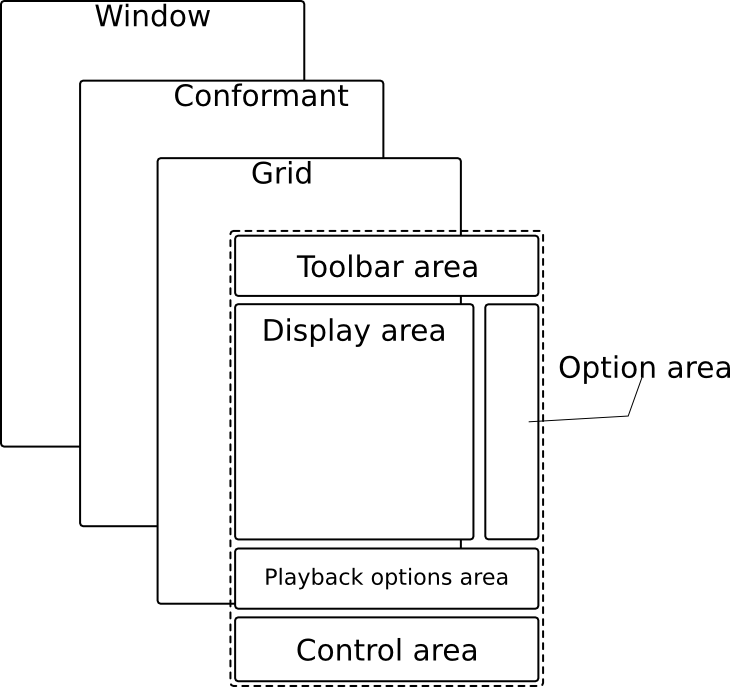
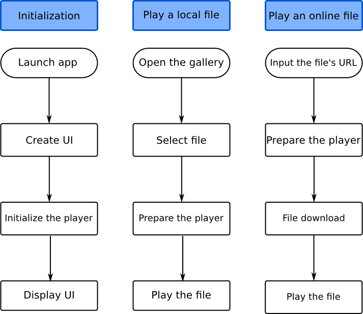
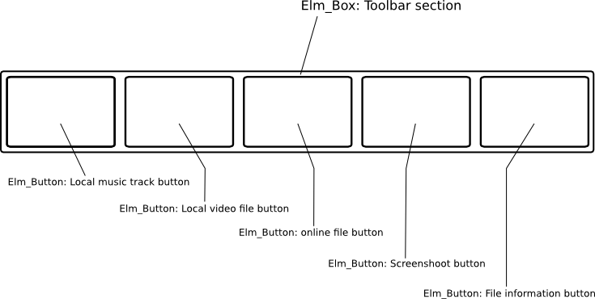
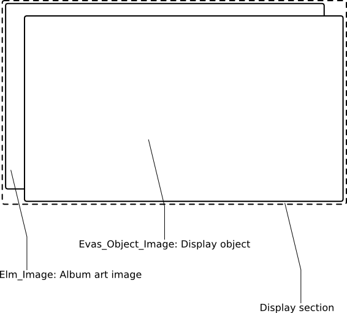
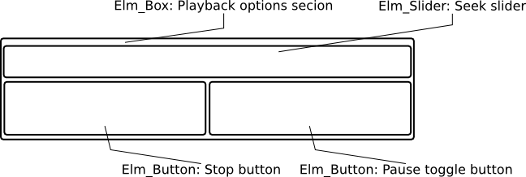
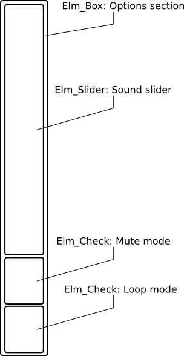

Stream-Player Sample Overview
This sample demonstrates how to use the Player API to play audio and video files as well as stream media files from the Web.
The figure below illustrates the application's view.
Figure 1: Stream-Player application's screen

The sample application's user interface consists of a single view divided into the following sections:
- Toolbar - Allows the user to choose a file to be played, display information about the file, or capture a screenshot from the played video;
- Option Panel - Allows the user to set the volume level, switch the mute option or switch the looping mode;
- Playback options area - Allows the user to set the play, pause and stop options. It also allows to use the seek and playback rate options;
- Display / Album art area - The played video or album art of a music file is displayed here. Note that if the music file does not provide any album art, a musical note image is displayed instead.
Figure 2: Stream-Player layout structure

The application's workflow can be divided into the following pipelines:
- application initialization;
- local file playback;
- online file playback.
Figure 3: Stream-Player application workflow

Prerequisites
To ensure proper application execution, the following privileges must be set:
- http://tizen.org/privilege/network.get;
- http://tizen.org/privilege/mediastorage;
- http://tizen.org/privilege/internet;
- http://tizen.org/privilege/network.set;
- http://tizen.org/privilege/content.write;
- http://tizen.org/privilege/appmanager.launch;
- http://tizen.org/privilege/network.profile;
- http://tizen.org/privilege/externalstorage.
Implementation
Type Definitions:
The view_info_s structure contains references to objects created by the view module.
struct view_info_s {
Evas_Object *win;
Evas_Object *conform;
Evas_Object *grid;
Evas_Object *button_panel;
Evas_Object *pause_play_btn;
Evas_Object *toolbar;
Evas_Object *progress_panel;
Evas_Object *seek_slider;
Evas_Object *playback_rate_slider;
Evas_Object *buffer_progress_bar;
Evas_Object *option_panel;
Evas_Object *mute_check;
Evas_Object *display;
Evas_Object *album_art;
Evas_Object *current_popup;
Eina_Bool play_btn_play_mode_on;
int found_storage_id;
Eina_Stringshare *video_path;
Eina_Stringshare *audio_path;
Eina_Stringshare *stream_uri;
Eina_Bool use_stream_album_art;
Ecore_Timer *progress_timer;
};
The player_s structure contains the objects used in the model.
struct player_s {
player_h player;
Evas_Object *display;
struct player_callback_s callbacks;
};
The player_callback_s structure contains pointers to callback functions used to send information from the model to the view.
struct player_callback_s {
Player_Status_Changed_cb_t player_status_changed_cb;
Player_Progress_Changed_cb_t player_progress_changed_cb;
Player_Progress_End_cb_t player_progress_end_cb;
Player_Screen_cb_t player_screen_cb;
Player_Message_cb_t player_msg_cb;
Player_Buffer_progress_cb_t player_buffer_progress_cb;
};
The following callbacks are provided:
- Player_Status_Changed_cb_t - invoked when the player's state changes;
- Player_Progress_Changed_cb_t - invoked when there is a change in the playback progress e.g. after the user moves the seek slider;
- Player_Progress_End_cb_t - invoked when the playback ends. Note that the function is not invoked when the loop mode is used;
- Player_Screen_cb_t - invoked when a screenshot is taken;
- Player_Message_cb_t - invoked when a text message should be displayed, e.g an error popup;
- Player_Buffer_progress_cb_t - invoked when an online file buffer progress changes.
Application Initialization:
The entire application life-cycle is implemented in the main.c file, using the common Tizen application structure:
int main(int argc, char *argv[])
{
int ret = 0;
ui_app_lifecycle_callback_s event_callback = {0,};
app_event_handler_h handlers[5] = {NULL, };
event_callback.create = __app_create;
event_callback.terminate = __app_terminate;
ui_app_add_event_handler(&handlers[APP_EVENT_LANGUAGE_CHANGED], APP_EVENT_LANGUAGE_CHANGED, __ui_app_lang_changed, NULL);
ret = ui_app_main(argc, argv, &event_callback, NULL);
// Error handling
}
The Stream-Player application's initialization is done within the __app_create() callback function where the player_model_init() function is responsible for the model's initialization. The view_create_base_gui() function is used to initialize the view module. On the application's termination, the __app_terminate() callback function is invoked, and all resources allocated within the model are freed.
View
The entire application's GUI is implemented using Elementary widgets and containers. The application's layout is shown in Figure 2. As mentioned above, the application's layout is divided into the following sections:
- Toolbar section,
- Display section,
- Playback options section,
- Options section.
Note that every section listed above (except for the display) is implemented using an Elementary Box container, filled with Elementary widgets. This box is then packed into a grid container.
| Description | Code snippet | Figure |
|---|---|---|
| The toolbar section is created using the __create_toolbar() function. The toolbar contains five buttons, created using the __create_button() function. The functions provide the user with access to both video and audio files as well as the ability to stream online files. The last two buttons allow the user to capture a screenshot of the displayed video and display information about current file. |
static Eina_Bool __create_toolbar(void)
{
s_info.toolbar = elm_box_add(s_info.grid);
// Error handling
elm_box_padding_set(s_info.toolbar, 10, 0);
elm_box_horizontal_set(s_info.toolbar, EINA_TRUE);
elm_grid_pack(s_info.grid, s_info.toolbar,
TOOLBAR_GEOMETRY_X, TOOLBAR_GEOMETRY_Y,
TOOLBAR_GEOMETRY_W, TOOLBAR_GEOMETRY_H);
if (!__create_button(s_info.toolbar,
EINA_FALSE, 0.1, EVAS_HINT_EXPAND,
AUDIO_FILE_PATH, __toolbar_file_open_cb, (void*)EINA_FALSE))
// Error handling
if (!__create_button(s_info.toolbar,
EINA_FALSE, 0.1, EVAS_HINT_EXPAND,
VIDEO_FILE_PATH, __toolbar_file_open_cb, (void*)EINA_TRUE))
// Error handling
if (!__create_uri_entry())
// Error handling
if (!__create_button(s_info.toolbar,
EINA_FALSE, 0.1, EVAS_HINT_EXPAND,
SCREENSHOT_ICON_FILE, __screen_capture_btn_clicked_cb, NULL))
// Error handling
if (!__create_button(s_info.toolbar,
EINA_FALSE, 0.1, EVAS_HINT_EXPAND,
INFO_ICON_FILE, __info_display_btn_clicked_cb, NULL))
// Error handling
evas_object_show(s_info.toolbar);
return EINA_TRUE;
}
|
 |
The display section is made of two stacked objects:
|
static Eina_Bool __add_display(void)
{
if (!s_info.grid)
// Error handling
s_info.display = evas_object_image_add(evas_object_evas_get(s_info.grid));
// Error handling
evas_object_image_filled_set(s_info.display, EINA_TRUE);
evas_object_event_callback_add(s_info.display,
EVAS_CALLBACK_MOUSE_DOWN, __display_clicked_cb, NULL);
elm_grid_pack(s_info.grid, s_info.display,
DISPLAY_GEOMETRY_X, DISPLAY_GEOMETRY_Y,
DISPLAY_GEOMETRY_W, DISPLAY_GEOMETRY_H);
evas_object_show(s_info.display);
return EINA_TRUE;
}
static Eina_Bool __add_album_art(void)
{
if (!s_info.grid) {
// Error handling
s_info.album_art = elm_image_add(s_info.grid);
// Error handling
evas_object_event_callback_add(s_info.display,
EVAS_CALLBACK_MOUSE_DOWN, __display_clicked_cb, NULL);
elm_grid_pack(s_info.grid, s_info.album_art,
DISPLAY_GEOMETRY_X, DISPLAY_GEOMETRY_Y,
DISPLAY_GEOMETRY_W, DISPLAY_GEOMETRY_H);
return EINA_TRUE;
}
|
 |
The playback options section is created from the following objects:
|
static Eina_Bool __create_button_panel(void)
{
s_info.button_panel = elm_box_add(s_info.grid);
// Error handling
evas_object_size_hint_weight_set(s_info.button_panel,
EVAS_HINT_EXPAND, EVAS_HINT_EXPAND);
evas_object_size_hint_align_set(s_info.button_panel,
EVAS_HINT_FILL, EVAS_HINT_FILL);
elm_box_horizontal_set(s_info.button_panel, EINA_TRUE);
elm_grid_pack(s_info.grid, s_info.button_panel,
BUTTON_PANEL_GEOMETRY_X, BUTTON_PANEL_GEOMETRY_Y,
BUTTON_PANEL_GEOMETRY_W, BUTTON_PANEL_GEOMETRY_H);
if (!__create_button(s_info.button_panel,
EINA_TRUE, EVAS_HINT_EXPAND, EVAS_HINT_EXPAND,
BTN_ICON_STOP, __button_stop_clicked_cb, NULL))
// Error handling
s_info.pause_play_btn = __create_button(s_info.button_panel,
EINA_TRUE, EVAS_HINT_EXPAND, EVAS_HINT_EXPAND,
BTN_ICON_PLAY, __button_pause_play_clicked_cb, NULL);
// Error handling
evas_object_show(s_info.button_panel);
return EINA_TRUE;
}
|
 |
The playback options section is created from the following objects:
|
static Eina_Bool __add_option_panel(void)
{
// Error handling
s_info.option_panel = elm_box_add(s_info.grid);
// Error handling
elm_grid_pack(s_info.grid, s_info.option_panel,
SOUND_PANEL_GEOMETRY_X, SOUND_PANEL_GEOMETRY_Y,
SOUND_PANEL_GEOMETRY_W, SOUND_PANEL_GEOMETRY_H);
if (!__add_option_panel_icon(SOUND_ICON_FILE))
// Error handling
if (!__add_sound_slider())
// Error handling
if (!__add_option_panel_icon(MUTE_ICON_FILE))
// Error handling
s_info.mute_check = __add_option_panel_check(__sound_mute_check_changed_cb);
// Error handling
if (!__add_option_panel_icon(LOOP_ICON_FILE))
// Error handling
if (!__add_option_panel_check(__playback_looping_changed_cb))
// Error handling
evas_object_show(s_info.option_panel);
return EINA_TRUE;
}
|
 |